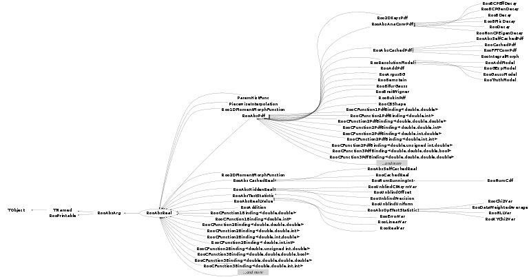

class RooAbsReal: public RooAbsArg
RooAbsReal is the common abstract base class for objects that represent a real value and implements functionality common to all real-valued objects such as the ability to plot them, to construct integrals of them, the ability to advertise (partial) analytical integrals etc.. Implementation of RooAbsReal may be derived, thus no interface is provided to modify the contents.
Function Members (Methods)
This is an abstract class, constructors will not be documented.
Look at the header to check for available constructors.
public:
protected:
private:
| Bool_t | matchArgsByName(const RooArgSet& allArgs, RooArgSet& matchedArgs, const TList& nameList) const |
Data Members
public:
| enum ScaleType { | Raw | |
| Relative | ||
| NumEvent | ||
| RelativeExpected | ||
| }; | ||
| enum ErrorLoggingMode { | PrintErrors | |
| CollectErrors | ||
| CountErrors | ||
| Ignore | ||
| }; | ||
| enum RooAbsArg::ConstOpCode { | Activate | |
| DeActivate | ||
| ConfigChange | ||
| ValueChange | ||
| }; | ||
| enum RooAbsArg::OperMode { | Auto | |
| AClean | ||
| ADirty | ||
| }; | ||
| enum TObject::EStatusBits { | kCanDelete | |
| kMustCleanup | ||
| kObjInCanvas | ||
| kIsReferenced | ||
| kHasUUID | ||
| kCannotPick | ||
| kNoContextMenu | ||
| kInvalidObject | ||
| }; | ||
| enum TObject::[unnamed] { | kIsOnHeap | |
| kNotDeleted | ||
| kZombie | ||
| kBitMask | ||
| kSingleKey | ||
| kOverwrite | ||
| kWriteDelete | ||
| }; | ||
| enum RooPrintable::ContentsOption { | kName | |
| kClassName | ||
| kValue | ||
| kArgs | ||
| kExtras | ||
| kAddress | ||
| kTitle | ||
| kCollectionHeader | ||
| }; | ||
| enum RooPrintable::StyleOption { | kInline | |
| kSingleLine | ||
| kStandard | ||
| kVerbose | ||
| kTreeStructure | ||
| }; |
protected:
| set<std::string> | RooAbsArg::_boolAttrib | Boolean attributes |
| set<std::string> | RooAbsArg::_boolAttribTransient | ! Transient boolean attributes (not copied in ctor) |
| UChar_t | _byteValue | ! Transient cache for byte values from tree branches |
| static Bool_t | _cacheCheck | If true, always validate contents of clean which outcome of evaluate() |
| deque<RooAbsCache*> | RooAbsArg::_cacheList | list of caches |
| RooRefCountList | RooAbsArg::_clientList | list of client objects |
| RooRefCountList | RooAbsArg::_clientListShape | subset of clients that requested shape dirty flag propagation |
| RooRefCountList | RooAbsArg::_clientListValue | subset of clients that requested value dirty flag propagation |
| TIterator* | RooAbsArg::_clientShapeIter | ! Iterator over _clientListShape |
| TIterator* | RooAbsArg::_clientValueIter | ! Iterator over _clientListValue |
| Bool_t | RooAbsArg::_deleteWatch | ! Delete watch flag |
| RooExpensiveObjectCache* | RooAbsArg::_eocache | Pointer to global cache manager for any expensive components created by this object |
| Bool_t | RooAbsArg::_fast | Allow fast access mode in getVal() and proxies |
| Float_t | _floatValue | ! Transient cache for floating point values from tree branches |
| Bool_t | _forceNumInt | Force numerical integration if flag set |
| static Bool_t | _globalSelectComp | Global activation switch for component selection |
| static Bool_t | RooAbsArg::_inhibitDirty | Static flag controlling global inhibit of dirty state propagation |
| Int_t | _intValue | ! Transient cache for integer values from tree branches |
| TString | _label | Plot label for objects value |
| RooArgSet* | _lastNSet | ! |
| static Int_t | RooPrintable::_nameLength | |
| TNamed* | RooAbsArg::_namePtr | ! Do not persist. Pointer to global instance of string that matches object named |
| RooAbsArg::OperMode | RooAbsArg::_operMode | Dirty state propagation mode |
| RooArgSet* | RooAbsArg::_ownedComponents | ! Set of owned component |
| Int_t | _plotBins | Number of plot bins |
| Double_t | _plotMax | Maximum of plot range |
| Double_t | _plotMin | Minimum of plot range |
| Bool_t | RooAbsArg::_prohibitServerRedirect | ! Prohibit server redirects -- Debugging tool |
| TRefArray | RooAbsArg::_proxyList | list of proxies |
| Char_t | _sbyteValue | ! Transient cache for signed byte values from tree branches |
| Bool_t | _selectComp | ! Component selection flag for RooAbsPdf::plotCompOn |
| RooRefCountList | RooAbsArg::_serverList | list of server objects |
| Bool_t | RooAbsArg::_shapeDirty | Flag set if value needs recalculating because input shapes modified |
| RooNumIntConfig* | _specIntegratorConfig | Numeric integrator configuration specific for this object |
| map<std::string,std::string> | RooAbsArg::_stringAttrib | String attributes |
| Bool_t | _treeVar | !do not persist |
| UInt_t | _uintValue | ! Transient cache for unsigned integer values from tree branches |
| TString | _unit | Unit for objects value |
| Double_t | _value | Cache for current value of object |
| Bool_t | RooAbsArg::_valueDirty | Flag set if value needs recalculating because input values modified |
| static Bool_t | RooAbsArg::_verboseDirty | Static flag controlling verbose messaging for dirty state changes |
| TString | TNamed::fName | object identifier |
| TString | TNamed::fTitle | object title |
private:
| static Int_t | _evalErrorCount | |
| static map<const RooAbsArg*,std::pair<std::string,std::list<EvalError> > > | _evalErrorList | |
| static RooAbsReal::ErrorLoggingMode | _evalErrorMode |
Class Charts
{kind=link}
{kind=link}
{kind=link}
{kind=link}

Function documentation
Bool_t operator==(const RooAbsArg& other)
Equality operator when comparing to another RooAbsArg. Only functional when the other arg is a RooAbsReal
TString getTitle(Bool_t appendUnit = kFALSE) const
Return this variable's title string. If appendUnit is true and this variable has units, also append a string " (<unit>)".
Double_t getValV(const RooArgSet* set = 0) const
Return value of object. If the cache is clean, return the cached value, otherwise recalculate on the fly and refill the cache
Double_t traceEval(const RooArgSet* set) const
Calculate current value of object, with error tracing wrapper
Int_t getAnalyticalIntegralWN(RooArgSet& allVars, RooArgSet& analVars, const RooArgSet* normSet, const char* rangeName = 0) const
Variant of getAnalyticalIntegral that is also passed the normalization set that should be applied to the integrand of which the integral is request. For certain operator p.d.f it is useful to overload this function rather than analyticalIntegralWN() as the additional normalization information may be useful in determining a more efficient decomposition of the requested integral
Int_t getAnalyticalIntegral(RooArgSet& allVars, RooArgSet& analVars, const char* rangeName = 0) const
Interface function getAnalyticalIntergral advertises the analytical integrals that are supported. 'integSet' is the set of dependents for which integration is requested. The function should copy the subset of dependents it can analytically integrate to anaIntSet and return a unique identification code for this integration configuration. If no integration can be performed, zero should be returned.
Double_t analyticalIntegralWN(Int_t code, const RooArgSet* normSet, const char* rangeName = 0) const
Implements the actual analytical integral(s) advertised by getAnalyticalIntegral. This functions will only be called with codes returned by getAnalyticalIntegral, except code zero.
Double_t analyticalIntegral(Int_t code, const char* rangeName = 0) const
Implements the actual analytical integral(s) advertised by getAnalyticalIntegral. This functions will only be called with codes returned by getAnalyticalIntegral, except code zero.
Bool_t readFromStream(istream& is, Bool_t compact, Bool_t verbose = kFALSE)
Read object contents from stream (dummy for now)
void writeToStream(ostream& os, Bool_t compact) const
Write object contents to stream (dummy for now)
void printMultiline(ostream& os, Int_t contents, Bool_t verbose = kFALSE, TString indent = "") const
Structure printing
Bool_t isValidReal(Double_t value, Bool_t printError = kFALSE) const
Interface function to check if given value is a valid value for this object. This default implementation considers all values valid
RooAbsReal* createProfile(const RooArgSet& paramsOfInterest)
Create a RooProfileLL object that eliminates all nuisance parameters in the present function. The nuisance parameters are defined as all parameters of the function except the stated paramsOfInterest
RooAbsReal* createIntegral(const RooArgSet& iset, const RooCmdArg& arg1, const RooCmdArg& arg2 = RooCmdArg::none(), const RooCmdArg& arg3 = RooCmdArg::none(), const RooCmdArg& arg4 = RooCmdArg::none(), const RooCmdArg& arg5 = RooCmdArg::none(), const RooCmdArg& arg6 = RooCmdArg::none(), const RooCmdArg& arg7 = RooCmdArg::none(), const RooCmdArg& arg8 = RooCmdArg::none()) const
Create an object that represents the integral of the function over one or more observables listed in iset The actual integration calculation is only performed when the return object is evaluated. The name of the integral object is automatically constructed from the name of the input function, the variables it integrates and the range integrates over The following named arguments are accepted NormSet(const RooArgSet&) -- Specify normalization set, mostly useful when working with PDFS NumIntConfig(const RooNumIntConfig&) -- Use given configuration for any numeric integration, if necessary Range(const char* name) -- Integrate only over given range. Multiple ranges may be specified by passing multiple Range() arguments
RooAbsReal* createIntegral(const RooArgSet& iset, const RooArgSet* nset = 0, const RooNumIntConfig* cfg = 0, const char* rangeName = 0) const
Create an object that represents the integral of the function over one or more observables listed in iset The actual integration calculation is only performed when the return object is evaluated. The name of the integral object is automatically constructed from the name of the input function, the variables it integrates and the range integrates over. If nset is specified the integrand is request to be normalized over nset (only meaningful when the integrand is a pdf). If rangename is specified the integral is performed over the named range, otherwise it is performed over the domain of each integrated observable. If cfg is specified it will be used to configure any numeric integration aspect of the integral. It will not force the integral to be performed numerically, which is decided automatically by RooRealIntegral
RooAbsReal* createIntObj(const RooArgSet& iset, const RooArgSet* nset, const RooNumIntConfig* cfg, const char* rangeName) const
Utility function for createIntegral that creates the actual integreal object
void findInnerMostIntegration(const RooArgSet& allObs, RooArgSet& innerObs, const char* rangeName) const
Utility function for createIntObj() that aids in the construct of recursive integrals over functions with multiple observables with parameterized ranges. This function finds in a given set allObs over which integration is requested the largeset subset of observables that can be integrated simultaneously. This subset consists of observables with fixed ranges and observables with parameterized ranges whose parameterization does not depend on any observable that is also integrated.
TString integralNameSuffix(const RooArgSet& iset, const RooArgSet* nset = 0, const char* rangeName = 0, Bool_t omitEmpty = kFALSE) const
Construct string with unique suffix name to give to integral object that encodes integrated observables, normalization observables and the integration range name
const RooAbsReal* createPlotProjection(const RooArgSet& depVars, const RooArgSet& projVars, RooArgSet*& cloneSet) const
const RooAbsReal* createPlotProjection(const RooArgSet& depVars, const RooArgSet& projVars) const
const RooAbsReal * createPlotProjection(const RooArgSet& dependentVars, const RooArgSet* projectedVars, RooArgSet*& cloneSet, const char* rangeName = 0, const RooArgSet* condObs = 0) const
Utility function for plotOn() that creates a projection of a function or p.d.f to be plotted on a RooPlot. Create a new object G that represents the normalized projection: Integral [ F[x,y,p] , { y } ] G[x,p] = --------------------------------- Integral [ F[x,y,p] , { x,y } ] where F[x,y,p] is the function we represent, "x" are the specified dependentVars, "y" are the specified projectedVars, and "p" are our remaining variables ("parameters"). Return a pointer to the newly created object, or else zero in case of an error. The caller is responsible for deleting the contents of cloneSet (which includes the returned projection object)
TH1 * fillHistogram(TH1* hist, const RooArgList& plotVars, Double_t scaleFactor = 1, const RooArgSet* projectedVars = 0, Bool_t scaling = kTRUE, const RooArgSet* condObs = 0, Bool_t setError = kTRUE) const
Fill the ROOT histogram 'hist' with values sampled from this function at the bin centers. Our value is calculated by first integrating out any variables in projectedVars and then scaling the result by scaleFactor. Returns a pointer to the input histogram, or zero in case of an error. The input histogram can be any TH1 subclass, and therefore of arbitrary dimension. Variables are matched with the (x,y,...) dimensions of the input histogram according to the order in which they appear in the input plotVars list. If scaleForDensity is true the histogram is filled with a the functions density rather than the functions value (i.e. the value at the bin center is multiplied with bin volume)
RooDataHist* fillDataHist(RooDataHist* hist, const RooArgSet* nset, Double_t scaleFactor, Bool_t correctForBinVolume = kFALSE, Bool_t showProgress = kFALSE) const
Fill a RooDataHist with values sampled from this function at the bin centers. If extendedMode is true, the p.d.f. values is multiplied by the number of expected events in each bin An optional scaling by a given scaleFactor can be performed. Returns a pointer to the input RooDataHist, or zero in case of an error. If correctForBinSize is true the RooDataHist is filled with the functions density (function value times the bin volume) rather than function value. If showProgress is true a process indicator is printed on stdout in steps of one percent, which is mostly useful for the sampling of expensive functions such as likelihoods
TH1* createHistogram(const char* varNameList, Int_t xbins = 0, Int_t ybins = 0, Int_t zbins = 0) const
Create and fill a ROOT histogram TH1,TH2 or TH3 with the values of this function for the variables with given names The number of bins can be controlled using the [xyz]bins parameters. For a greater degree of control use the createHistogram() method below with named arguments The caller takes ownership of the returned histogram
TH1 * createHistogram(const char* name, const RooAbsRealLValue& xvar, const RooCmdArg& arg1 = RooCmdArg::none(), const RooCmdArg& arg2 = RooCmdArg::none(), const RooCmdArg& arg3 = RooCmdArg::none(), const RooCmdArg& arg4 = RooCmdArg::none(), const RooCmdArg& arg5 = RooCmdArg::none(), const RooCmdArg& arg6 = RooCmdArg::none(), const RooCmdArg& arg7 = RooCmdArg::none(), const RooCmdArg& arg8 = RooCmdArg::none()) const
Create and fill a ROOT histogram TH1,TH2 or TH3 with the values of this function. This function accepts the following arguments name -- Name of the ROOT histogram xvar -- Observable to be mapped on x axis of ROOT histogram Binning(const char* name) -- Apply binning with given name to x axis of histogram Binning(RooAbsBinning& binning) -- Apply specified binning to x axis of histogram Binning(int nbins, [double lo, double hi]) -- Apply specified binning to x axis of histogram ConditionalObservables(const RooArgSet& set) -- Do not normalized PDF over following observables when projecting PDF into histogram Scaling(Bool_t) -- Apply density-correction scaling (multiply by bin volume), default is kTRUE YVar(const RooAbsRealLValue& var,...) -- Observable to be mapped on y axis of ROOT histogram ZVar(const RooAbsRealLValue& var,...) -- Observable to be mapped on z axis of ROOT histogram The YVar() and ZVar() arguments can be supplied with optional Binning() arguments to control the binning of the Y and Z axes, e.g. createHistogram("histo",x,Binning(-1,1,20), YVar(y,Binning(-1,1,30)), ZVar(z,Binning("zbinning"))) The caller takes ownership of the returned histogram
TH1* createHistogram(const char* name, const RooAbsRealLValue& xvar, RooLinkedList& argList) const
Internal method implementing createHistogram
RooPlot* plotOn(RooPlot* frame, const RooCmdArg& arg1 = RooCmdArg(), const RooCmdArg& arg2 = RooCmdArg(), const RooCmdArg& arg3 = RooCmdArg(), const RooCmdArg& arg4 = RooCmdArg(), const RooCmdArg& arg5 = RooCmdArg(), const RooCmdArg& arg6 = RooCmdArg(), const RooCmdArg& arg7 = RooCmdArg(), const RooCmdArg& arg8 = RooCmdArg(), const RooCmdArg& arg9 = RooCmdArg(), const RooCmdArg& arg10 = RooCmdArg()) const
Plot (project) PDF on specified frame. If a PDF is plotted in an empty frame, it will show a unit normalized curve in the frame variable, taken at the present value of other observables defined for this PDF If a PDF is plotted in a frame in which a dataset has already been plotted, it will show a projected curve integrated over all variables that were present in the shown dataset except for the one on the x-axis. The normalization of the curve will also be adjusted to the event count of the plotted dataset. An informational message will be printed for each projection step that is performed This function takes the following named arguments Projection control Slice(const RooArgSet& set) -- Override default projection behaviour by omittting observables listed in set from the projection, resulting a 'slice' plot. Slicing is usually only sensible in discrete observables. The slice is position at the 'current' value of the observable objects Slice(RooCategory& cat, -- Override default projection behaviour by omittting specified category const char* label) observable from the projection, resulting in a 'slice' plot. The slice is positioned at the given label value. Multiple Slice() commands can be given to specify slices in multiple observables Project(const RooArgSet& set) -- Override default projection behaviour by projecting over observables given in set and complete ignoring the default projection behavior. Advanced use only. ProjWData(const RooAbsData& d) -- Override default projection _technique_ (integration). For observables present in given dataset projection of PDF is achieved by constructing an average over all observable values in given set. Consult RooFit plotting tutorial for further explanation of meaning & use of this technique ProjWData(const RooArgSet& s, -- As above but only consider subset 's' of observables in dataset 'd' for projection through data averaging const RooAbsData& d) ProjectionRange(const char* rn) -- Override default range of projection integrals to a different range speficied by given range name. This technique allows you to project a finite width slice in a real-valued observable NumCPU(Int_t ncpu) -- Number of CPUs to use simultaneously to calculate data-weighted projections (only in combination with ProjWData) Misc content control PrintEvalErrors(Int_t numErr) -- Control number of p.d.f evaluation errors printed per curve. A negative value suppress output completely, a zero value will only print the error count per p.d.f component, a positive value is will print details of each error up to numErr messages per p.d.f component. EvalErrorValue(Double_t value) -- Set curve points at which (pdf) evaluation error occur to specified value. By default the function value is plotted. Normalization(Double_t scale, -- Adjust normalization by given scale factor. Interpretation of number depends on code: Relative: ScaleType code) relative adjustment factor, NumEvent: scale to match given number of events. Name(const chat* name) -- Give curve specified name in frame. Useful if curve is to be referenced later Asymmetry(const RooCategory& c) -- Show the asymmetry of the PDF in given two-state category [F(+)-F(-)] / [F(+)+F(-)] rather than the PDF projection. Category must have two states with indices -1 and +1 or three states with indeces -1,0 and +1. ShiftToZero(Bool_t flag) -- Shift entire curve such that lowest visible point is at exactly zero. Mostly useful when plotting -log(L) or chi^2 distributions AddTo(const char* name, -- Add constructed projection to already existing curve with given name and relative weight factors double_t wgtSelf, double_t wgtOther) Plotting control DrawOption(const char* opt) -- Select ROOT draw option for resulting TGraph object LineStyle(Int_t style) -- Select line style by ROOT line style code, default is solid LineColor(Int_t color) -- Select line color by ROOT color code, default is blue LineWidth(Int_t width) -- Select line with in pixels, default is 3 FillStyle(Int_t style) -- Select fill style, default is not filled. If a filled style is selected, also use VLines() to add vertical downward lines at end of curve to ensure proper closure FillColor(Int_t color) -- Select fill color by ROOT color code Range(const char* name) -- Only draw curve in range defined by given name Range(double lo, double hi) -- Only draw curve in specified range VLines() -- Add vertical lines to y=0 at end points of curve Precision(Double_t eps) -- Control precision of drawn curve w.r.t to scale of plot, default is 1e-3. Higher precision will result in more and more densely spaced curve points Invisible(Bool_t flag) -- Add curve to frame, but do not display. Useful in combination AddTo() VisualizeError(const RooFitResult& fitres, Double_t Z=1, Bool_t linearMethod=kTRUE) -- Visualize the uncertainty on the parameters, as given in fitres, at 'Z' sigma' VisualizeError(const RooFitResult& fitres, const RooArgSet& param, Double_t Z=1, Bool_t linearMethod=kTRUE) ; -- Visualize the uncertainty on the subset of parameters 'param', as given in fitres, at 'Z' sigma' Details on error band visualization By default (linMethod=kTRUE) a linearized error is shown which is calculated as follows T error(x) = Z* F_a(x) * Corr(a,a') F_a'(x) where F_a(x) = [ f(x,a+da) - f(x,a-da) ] / 2, with f(x) the plotted curve and 'da' taken from the fit result Corr(a,a') = the correlation matrix from the fit result Z = requested significance 'Z sigma band' The linear method is fast (required 2*N evaluations of the curve, where N is the number of parameters), but may not be accurate in the presence of strong correlations (~>0.9) and at Z>2 due to linear and Gaussian approximations made Alternatively (linMethod=kFALSE), a more robust error is calculated using a sampling method. In this method a number of curves is calculated with variations of the parameter values, as drawn from a multi-variate Gaussian p.d.f. that is constructed from the fit results covariance matrix. The error(x) is determined by calculating a central interval that capture N% of the variations for each valye of x, where N% is controlled by Z (i.e. Z=1 gives N=68%). The number of sampling curves is chosen to be such that at least 30 curves are expected to be outside the N% interval, and is minimally 100 (e.g. Z=1->Ncurve=100, Z=2->Ncurve=659, Z=3->Ncurve=11111) Intervals from the sampling method can be asymmetric, and may perform better in the presence of strong correlations, but may take (much) longer to calculate
RooPlot* plotOn(RooPlot* frame, RooLinkedList& cmdList) const
Internal back-end function of plotOn() with named arguments
RooPlot* plotOn(RooPlot* frame, RooAbsReal::PlotOpt o) const
Plotting engine function for internal use
Plot ourselves on given frame. If frame contains a histogram, all dimensions of the plotted
function that occur in the previously plotted dataset are projected via partial integration,
otherwise no projections are performed. Optionally, certain projections can be performed
by summing over the values present in a provided dataset ('projData'), to correctly
project out data dependents that are not properly described by the PDF (e.g. per-event errors).
The functions value can be multiplied with an optional scale factor. The interpretation
of the scale factor is unique for generic real functions, for PDFs there are various interpretations
possible, which can be selection with 'stype' (see RooAbsPdf::plotOn() for details).
The default projection behaviour can be overriden by supplying an optional set of dependents
to project. For most cases, plotSliceOn() and plotProjOn() provide a more intuitive interface
to modify the default projection behavour.
RooPlot* plotSliceOn(RooPlot* frame, const RooArgSet& sliceSet, Option_t* drawOptions = "L", Double_t scaleFactor = 1.0, RooAbsReal::ScaleType stype = Relative, const RooAbsData* projData = 0) const
OBSOLETE -- RETAINED FOR BACKWARD COMPATIBILITY. Use the plotOn(frame,Slice(...)) instead
RooPlot* plotAsymOn(RooPlot* frame, const RooAbsCategoryLValue& asymCat, RooAbsReal::PlotOpt o) const
Plotting engine for asymmetries. Implements the functionality if plotOn(frame,Asymmetry(...))) Plot asymmetry of ourselves, defined as asym = f(asymCat=-1) - f(asymCat=+1) / ( f(asymCat=-1) + f(asymCat=+1) ) on frame. If frame contains a histogram, all dimensions of the plotted asymmetry function that occur in the previously plotted dataset are projected via partial integration. Otherwise no projections are performed, The asymmetry function can be multiplied with an optional scale factor. The default projection behaviour can be overriden by supplying an optional set of dependents to project.
Double_t getPropagatedError(const RooFitResult& fr)
Calculate error on self by propagated errors on parameters with correlations as given by fit result
The linearly propagated error is calculated as follows
T
error(x) = F_a(x) * Corr(a,a') F_a'(x)
where F_a(x) = [ f(x,a+da) - f(x,a-da) ] / 2, with f(x) this function and 'da' taken from the fit result
Corr(a,a') = the correlation matrix from the fit result
RooPlot* plotOnWithErrorBand(RooPlot* frame, const RooFitResult& fr, Double_t Z, const RooArgSet* params, const RooLinkedList& argList, Bool_t method1) const
Plot function or p.d.f. on frame with support for visualization of the uncertainty encoded in the given fit result fr. If params is non-zero, only the subset of the parameters in fr that occur in params is considered for the error evaluation Argument argList can contain any RooCmdArg named argument that can be applied to a regular plotOn() operation By default (linMethod=kTRUE) a linearized error is shown which is calculated as follows T error(x) = Z* F_a(x) * Corr(a,a') F_a'(x) where F_a(x) = [ f(x,a+da) - f(x,a-da) ] / 2, with f(x) the plotted curve and 'da' taken from the fit result Corr(a,a') = the correlation matrix from the fit result Z = requested signifance 'Z sigma band' The linear method is fast (required 2*N evaluations of the curve, where N is the number of parameters), but may not be accurate in the presence of strong correlations (~>0.9) and at Z>2 due to linear and Gaussian approximations made Alternatively, a more robust error is calculated using a sampling method. In this method a number of curves is calculated with variations of the parameter values, as drawn from a multi-variate Gaussian p.d.f. that is constructed from the fit results covariance matrix. The error(x) is determined by calculating a central interval that capture N% of the variations for each valye of x, where N% is controlled by Z (i.e. Z=1 gives N=68%). The number of sampling curves is chosen to be such that at least 30 curves are expected to be outside the N% interval, and is minimally 100 (e.g. Z=1->Ncurve=100, Z=2->Ncurve=659, Z=3->Ncurve=11111) Intervals from the sampling method can be asymmetric, and may perform better in the presence of strong correlations
Bool_t plotSanityChecks(RooPlot* frame) const
Utility function for plotOn(), perform general sanity check on frame to ensure safe plotting operations
void makeProjectionSet(const RooAbsArg* plotVar, const RooArgSet* allVars, RooArgSet& projectedVars, Bool_t silent) const
Utility function for plotOn() that constructs the set of observables to project when plotting ourselves as function of 'plotVar'. 'allVars' is the list of variables that must be projected, but may contain variables that we do not depend on. If 'silent' is cleared, warnings about inconsistent input parameters will be printed.
Bool_t isSelectedComp() const
If true, the current pdf is a selected component (for use in plotting)
void globalSelectComp(Bool_t flag)
Global switch controlling the activation of the selectComp() functionality
RooAbsFunc * bindVars(const RooArgSet& vars, const RooArgSet* nset = 0, Bool_t clipInvalid = kFALSE) const
Create an interface adaptor f(vars) that binds us to the specified variables (in arbitrary order). For example, calling bindVars({x1,x3}) on an object F(x1,x2,x3,x4) returns an object f(x1,x3) that is evaluated using the current values of x2 and x4. The caller takes ownership of the returned adaptor.
void attachToVStore(RooVectorDataStore& vstore)
void attachToTree(TTree& t, Int_t bufSize = 32000)
Attach object to a branch of given TTree. By default it will register the internal value cache RooAbsReal::_value as branch buffer for a Double_t tree branch with the same name as this object. If no Double_t branch is found with the name of this object, this method looks for a Float_t Int_t, UChar_t and UInt_t branch in that order. If any of these are found the buffer for that branch is set to a correctly typed conversion buffer in this RooRealVar. A flag is set that will cause copyCache to copy the object value from the appropriate conversion buffer instead of the _value buffer.
void fillTreeBranch(TTree& t)
Fill the tree branch that associated with this object with its current value
RooAbsArg * createFundamental(const char* newname = 0) const
Create a RooRealVar fundamental object with our properties. The new object will be created without any fit limits.
Bool_t matchArgs(const RooArgSet& allDeps, RooArgSet& numDeps, const RooArgProxy& a) const
Utility function for use in getAnalyticalIntegral(). If the content of proxy 'a' occurs in set 'allDeps' then the argument held in 'a' is copied from allDeps to analDeps
Bool_t matchArgs(const RooArgSet& allDeps, RooArgSet& numDeps, const RooArgProxy& a, const RooArgProxy& b) const
Utility function for use in getAnalyticalIntegral(). If the contents of proxies a,b occur in set 'allDeps' then the arguments held in a,b are copied from allDeps to analDeps
Bool_t matchArgs(const RooArgSet& allDeps, RooArgSet& numDeps, const RooArgProxy& a, const RooArgProxy& b, const RooArgProxy& c) const
Utility function for use in getAnalyticalIntegral(). If the contents of proxies a,b,c occur in set 'allDeps' then the arguments held in a,b,c are copied from allDeps to analDeps
Bool_t matchArgs(const RooArgSet& allDeps, RooArgSet& numDeps, const RooArgProxy& a, const RooArgProxy& b, const RooArgProxy& c, const RooArgProxy& d) const
Utility function for use in getAnalyticalIntegral(). If the contents of proxies a,b,c,d occur in set 'allDeps' then the arguments held in a,b,c,d are copied from allDeps to analDeps
Bool_t matchArgs(const RooArgSet& allDeps, RooArgSet& numDeps, const RooArgSet& set) const
Utility function for use in getAnalyticalIntegral(). If the contents of 'refset' occur in set 'allDeps' then the arguments held in 'refset' are copied from allDeps to analDeps.
Bool_t matchArgsByName(const RooArgSet& allArgs, RooArgSet& matchedArgs, const TList& nameList) const
RooNumIntConfig* defaultIntegratorConfig()
Returns the default numeric integration configuration for all RooAbsReals
RooNumIntConfig* specialIntegratorConfig() const
Returns the specialized integrator configuration for _this_ RooAbsReal. If this object has no specialized configuration, a null pointer is returned.
RooNumIntConfig* specialIntegratorConfig(Bool_t createOnTheFly)
Returns the specialized integrator configuration for _this_ RooAbsReal. If this object has no specialized configuration, a null pointer is returned, unless createOnTheFly is kTRUE in which case a clone of the default integrator configuration is created, installed as specialized configuration, and returned
const RooNumIntConfig* getIntegratorConfig() const
Return the numeric integration configuration used for this object. If a specialized configuration was associated with this object, that configuration is returned, otherwise the default configuration for all RooAbsReals is returned
RooNumIntConfig* getIntegratorConfig()
Return the numeric integration configuration used for this object. If a specialized configuration was associated with this object, that configuration is returned, otherwise the default configuration for all RooAbsReals is returned
void setIntegratorConfig(const RooNumIntConfig& config)
Set the given integrator configuration as default numeric integration configuration for this object
void setIntegratorConfig()
Remove the specialized numeric integration configuration associated with this object
void selectNormalization(const RooArgSet* depSet = 0, Bool_t force = kFALSE)
Interface function to force use of a given set of observables to interpret function value. Needed for functions or p.d.f.s whose shape depends on the choice of normalization such as RooAddPdf
void selectNormalizationRange(const char* rangeName = 0, Bool_t force = kFALSE)
Interface function to force use of a given normalization range to interpret function value. Needed for functions or p.d.f.s whose shape depends on the choice of normalization such as RooAddPdf
Int_t getMaxVal(const RooArgSet& vars) const
Advertise capability to determine maximum value of function for given set of observables. If no direct generator method is provided, this information will assist the accept/reject generator to operate more efficiently as it can skip the initial trial sampling phase to empirically find the function maximum
Double_t maxVal(Int_t code) const
Return maximum value for set of observables identified by code assigned in getMaxVal
void logEvalError(const RooAbsReal* originator, const char* origName, const char* message, const char* serverValueString = 0)
Interface to insert remote error logging messages received by RooRealMPFE into current error loggin stream
void logEvalError(const char* message, const char* serverValueString = 0) const
Log evaluation error message. Evaluation errors may be routed through a different protocol than generic RooFit warning message (which go straight through RooMsgService) because evaluation errors can occur in very large numbers in the use of likelihood evaluations. In logEvalError mode, controlled by global method enableEvalErrorLogging() messages reported through this function are not printed but all stored in a list, along with server values at the time of reporting. Error messages logged in this way can be printed in a structured way, eliminating duplicates and with the ability to truncate the list by printEvalErrors. This is the standard mode of error logging during MINUIT operations. If enableEvalErrorLogging() is false, all errors reported through this method are passed for immediate printing through RooMsgService. A string with server names and values is constructed automatically for error logging purposes, unless a custom string with similar information is passed as argument.
void printEvalErrors(ostream& os = std::cout, Int_t maxPerNode = 10000000)
Print all outstanding logged evaluation error on the given ostream. If maxPerNode is zero, only the number of errors for each source (object with unique name) is listed. If maxPerNode is greater than zero, up to maxPerNode detailed error messages are shown per source of errors. A truncation message is shown if there were more errors logged than shown.
void fixAddCoefNormalization(const RooArgSet& addNormSet = RooArgSet(), Bool_t force = kTRUE)
Fix the interpretation of the coefficient of any RooAddPdf component in the expression tree headed by this object to the given set of observables. If the force flag is false, the normalization choice is only fixed for those RooAddPdf components that have the default 'automatic' interpretation of coefficients (i.e. the interpretation is defined by the observables passed to getVal()). If force is true, also RooAddPdf that already have a fixed interpretation are changed to a new fixed interpretation.
void fixAddCoefRange(const char* rangeName = 0, Bool_t force = kTRUE)
Fix the interpretation of the coefficient of any RooAddPdf component in the expression tree headed by this object to the given set of observables. If the force flag is false, the normalization range choice is only fixed for those RooAddPdf components that currently use the default full domain to interpret their coefficients. If force is true, also RooAddPdf that already have a fixed interpretation range are changed to a new fixed interpretation range.
void preferredObservableScanOrder(const RooArgSet& obs, RooArgSet& orderedObs) const
Interface method for function objects to indicate their prefferred order of observables for scanning their values into a (multi-dimensional) histogram or RooDataSet. The observables to be ordered are offered in argument 'obs' and should be copied in their preferred order into argument 'orderdObs', This default implementation indicates no preference and copies the original order of 'obs' into 'orderedObs'
RooAbsReal* createRunningIntegral(const RooArgSet& iset, const RooArgSet& nset = RooArgSet())
Create a running integral over this function, i.e. given a f(x), create an object representing 'int[x_lo,x] f(x_prime) dx_prime'
RooAbsReal* createRunningIntegral(const RooArgSet& iset, const RooCmdArg& arg1, const RooCmdArg& arg2 = RooCmdArg::none(), const RooCmdArg& arg3 = RooCmdArg::none(), const RooCmdArg& arg4 = RooCmdArg::none(), const RooCmdArg& arg5 = RooCmdArg::none(), const RooCmdArg& arg6 = RooCmdArg::none(), const RooCmdArg& arg7 = RooCmdArg::none(), const RooCmdArg& arg8 = RooCmdArg::none())
Create an object that represents the running integral of the function over one or more observables listed in iset, i.e. int[x_lo,x] f(x_prime) dx_prime The actual integration calculation is only performed when the return object is evaluated. The name of the integral object is automatically constructed from the name of the input function, the variables it integrates and the range integrates over. The default strategy to calculate the running integrals is - If the integrand (this object) supports analytical integration, construct an integral object that calculate the running integrals value by calculating the analytical integral each time the running integral object is evaluated - If the integrand (this object) requires numeric integration to construct the running integral create an object of class RooNumRunningInt which first samples the entire function and integrates the sampled function numerically. This method has superior performance as there is no need to perform a full (numeric) integration for each evaluation of the running integral object, but only when one of its parameters has changed. The choice of strategy can be changed with the ScanAll() argument, which forces the use of the scanning technique implemented in RooNumRunningInt for all use cases, and with the ScanNone() argument which forces the 'integrate each evaluation' technique for all use cases. The sampling granularity for the scanning technique can be controlled with the ScanParameters technique which allows to specify the number of samples to be taken, and to which order the resulting running integral should be interpolated. The default values are 1000 samples and 2nd order interpolation. The following named arguments are accepted SupNormSet(const RooArgSet&) -- Observables over which should be normalized _in_addition_ to the integration observables ScanParameters(Int_t nbins, -- Parameters for scanning technique of making CDF: number Int_t intOrder) of sampled bins and order of interpolation applied on numeric cdf ScanNum() -- Apply scanning technique if cdf integral involves numeric integration ScanAll() -- Always apply scanning technique ScanNone() -- Never apply scanning technique
RooAbsReal* createScanRI(const RooArgSet& iset, const RooArgSet& nset, Int_t numScanBins, Int_t intOrder)
Utility function for createRunningIntegral that construct an object implementing the numeric scanning technique for calculating the running integral
RooAbsReal* createIntRI(const RooArgSet& iset, const RooArgSet& nset = RooArgSet())
Utility function for createRunningIntegral that construct an object implementing the standard (analytical) integration technique for calculating the running integral
RooFunctor* functor(const RooArgList& obs, const RooArgList& pars = RooArgList(), const RooArgSet& nset = RooArgSet()) const
Return a RooFunctor object bound to this RooAbsReal with given definition of observables and parameters
TF1* asTF(const RooArgList& obs, const RooArgList& pars = RooArgList(), const RooArgSet& nset = RooArgSet()) const
Return a ROOT TF1,2,3 object bound to this RooAbsReal with given definition of observables and parameters
RooDerivative* derivative(RooRealVar& obs, Int_t order = 1, Double_t eps = 0.001)
Return function representing first, second or third order derivative of this function
RooDerivative* derivative(RooRealVar& obs, const RooArgSet& normSet, Int_t order, Double_t eps = 0.001)
Return function representing first, second or third order derivative of this function
RooMoment* moment(RooRealVar& obs, const RooArgSet& normObs, Int_t order, Bool_t central, Bool_t takeRoot, Bool_t intNormObs)
Double_t findRoot(RooRealVar& x, Double_t xmin, Double_t xmax, Double_t yval)
Return value of x (in range xmin,xmax) at which function equals yval. (Calculation is performed with Brent root finding algorithm)
RooGenFunction* iGenFunction(RooRealVar& x, const RooArgSet& nset = RooArgSet())
RooMultiGenFunction* iGenFunction(const RooArgSet& observables, const RooArgSet& nset = RooArgSet())
RooFitResult* chi2FitTo(RooDataHist& data, const RooCmdArg& arg1 = RooCmdArg::none(), const RooCmdArg& arg2 = RooCmdArg::none(), const RooCmdArg& arg3 = RooCmdArg::none(), const RooCmdArg& arg4 = RooCmdArg::none(), const RooCmdArg& arg5 = RooCmdArg::none(), const RooCmdArg& arg6 = RooCmdArg::none(), const RooCmdArg& arg7 = RooCmdArg::none(), const RooCmdArg& arg8 = RooCmdArg::none())
Perform a chi^2 fit to given histogram By default the fit is executed through the MINUIT commands MIGRAD, HESSE in succession The following named arguments are supported Options to control construction of -log(L) Range(const char* name) -- Fit only data inside range with given name Range(Double_t lo, Double_t hi) -- Fit only data inside given range. A range named "fit" is created on the fly on all observables. Multiple comma separated range names can be specified. NumCPU(int num) -- Parallelize NLL calculation on num CPUs Optimize(Bool_t flag) -- Activate constant term optimization (on by default) Options to control flow of fit procedure InitialHesse(Bool_t flag) -- Flag controls if HESSE before MIGRAD as well, off by default Hesse(Bool_t flag) -- Flag controls if HESSE is run after MIGRAD, on by default Minos(Bool_t flag) -- Flag controls if MINOS is run after HESSE, on by default Minos(const RooArgSet& set) -- Only run MINOS on given subset of arguments Save(Bool_t flag) -- Flac controls if RooFitResult object is produced and returned, off by default Strategy(Int_t flag) -- Set Minuit strategy (0 through 2, default is 1) FitOptions(const char* optStr) -- Steer fit with classic options string (for backward compatibility). Use of this option excludes use of any of the new style steering options. Options to control informational output Verbose(Bool_t flag) -- Flag controls if verbose output is printed (NLL, parameter changes during fit Timer(Bool_t flag) -- Time CPU and wall clock consumption of fit steps, off by default PrintLevel(Int_t level) -- Set Minuit print level (-1 through 3, default is 1). At -1 all RooFit informational messages are suppressed as well Warnings(Bool_t flag) -- Enable or disable MINUIT warnings (enabled by default) PrintEvalErrors(Int_t numErr) -- Control number of p.d.f evaluation errors printed per likelihood evaluation. A negative value suppress output completely, a zero value will only print the error count per p.d.f component, a positive value is will print details of each error up to numErr messages per p.d.f component.
RooFitResult* chi2FitTo(RooDataHist& data, const RooLinkedList& cmdList)
Internal back-end function to steer chi2 fits
RooAbsReal* createChi2(RooDataHist& data, const RooCmdArg& arg1 = RooCmdArg::none(), const RooCmdArg& arg2 = RooCmdArg::none(), const RooCmdArg& arg3 = RooCmdArg::none(), const RooCmdArg& arg4 = RooCmdArg::none(), const RooCmdArg& arg5 = RooCmdArg::none(), const RooCmdArg& arg6 = RooCmdArg::none(), const RooCmdArg& arg7 = RooCmdArg::none(), const RooCmdArg& arg8 = RooCmdArg::none())
Create a chi-2 from a histogram and this function. The following named arguments are supported Options to control construction of the chi^2 DataError(RooAbsData::ErrorType) -- Choose between Poisson errors and Sum-of-weights errors NumCPU(Int_t) -- Activate parallel processing feature on N processes Range() -- Calculate Chi2 only in selected region
RooAbsReal* createChi2(RooDataHist& data, const RooLinkedList& cmdList)
Internal back-end function to create a chi2
RooFitResult* chi2FitTo(RooDataSet& xydata, const RooCmdArg& arg1 = RooCmdArg::none(), const RooCmdArg& arg2 = RooCmdArg::none(), const RooCmdArg& arg3 = RooCmdArg::none(), const RooCmdArg& arg4 = RooCmdArg::none(), const RooCmdArg& arg5 = RooCmdArg::none(), const RooCmdArg& arg6 = RooCmdArg::none(), const RooCmdArg& arg7 = RooCmdArg::none(), const RooCmdArg& arg8 = RooCmdArg::none())
Create a chi-2 from a series of x and y value stored in a dataset. The y values can either be the event weights, or can be another column designated by the YVar() argument. The y value must have errors defined for the chi-2 to be well defined. The following named arguments are supported Options to control construction of the chi^2 YVar(RooRealVar& yvar) -- Designate given column in dataset as Y value Integrate(Bool_t flag) -- Integrate function over range specified by X errors rather than take value at bin center. Options to control flow of fit procedure InitialHesse(Bool_t flag) -- Flag controls if HESSE before MIGRAD as well, off by default Hesse(Bool_t flag) -- Flag controls if HESSE is run after MIGRAD, on by default Minos(Bool_t flag) -- Flag controls if MINOS is run after HESSE, on by default Minos(const RooArgSet& set) -- Only run MINOS on given subset of arguments Save(Bool_t flag) -- Flac controls if RooFitResult object is produced and returned, off by default Strategy(Int_t flag) -- Set Minuit strategy (0 through 2, default is 1) FitOptions(const char* optStr) -- Steer fit with classic options string (for backward compatibility). Use of this option excludes use of any of the new style steering options. Options to control informational output Verbose(Bool_t flag) -- Flag controls if verbose output is printed (NLL, parameter changes during fit Timer(Bool_t flag) -- Time CPU and wall clock consumption of fit steps, off by default PrintLevel(Int_t level) -- Set Minuit print level (-1 through 3, default is 1). At -1 all RooFit informational messages are suppressed as well Warnings(Bool_t flag) -- Enable or disable MINUIT warnings (enabled by default) PrintEvalErrors(Int_t numErr) -- Control number of p.d.f evaluation errors printed per likelihood evaluation. A negative value suppress output completely, a zero value will only print the error count per p.d.f component, a positive value is will print details of each error up to numErr messages per p.d.f component.
RooFitResult* chi2FitTo(RooDataSet& xydata, const RooLinkedList& cmdList)
Internal back-end function to steer chi2 fits
RooAbsReal* createChi2(RooDataSet& data, const RooCmdArg& arg1 = RooCmdArg::none(), const RooCmdArg& arg2 = RooCmdArg::none(), const RooCmdArg& arg3 = RooCmdArg::none(), const RooCmdArg& arg4 = RooCmdArg::none(), const RooCmdArg& arg5 = RooCmdArg::none(), const RooCmdArg& arg6 = RooCmdArg::none(), const RooCmdArg& arg7 = RooCmdArg::none(), const RooCmdArg& arg8 = RooCmdArg::none())
Create a chi-2 from a series of x and y value stored in a dataset. The y values can either be the event weights (default), or can be another column designated by the YVar() argument. The y value must have errors defined for the chi-2 to be well defined. The following named arguments are supported Options to control construction of the chi^2 YVar(RooRealVar& yvar) -- Designate given column in dataset as Y value Integrate(Bool_t flag) -- Integrate function over range specified by X errors rather than take value at bin center.
RooAbsReal* createChi2(RooDataSet& data, const RooLinkedList& cmdList)
Internal back-end function to create a chi^2 from a function and a dataset
RooFitResult* chi2FitDriver(RooAbsReal& fcn, RooLinkedList& cmdList)
Internal driver function for chi2 fits
void setEvalErrorLoggingMode(RooAbsReal::ErrorLoggingMode m)
Set evaluation error logging mode. Options are PrintErrors - Print each error through RooMsgService() as it occurs CollectErrors - Accumulate errors, but do not print them. A subsequent call to printEvalErrors() will print a summary CountErrors - Accumulate error count, but do not print them.
Bool_t forceAnalyticalInt(const RooAbsArg& ) const
Interface to force RooRealIntegral to offer given observable for internal integration even if this is deemed unsafe. This default implementation returns always flase
void forceNumInt(Bool_t flag = kTRUE)
If flag is true, all advertised analytical integrals will be ignored and all integrals are calculated numerically
RooAbsReal* createIntegral(const RooArgSet& iset, const RooCmdArg& arg1, const RooCmdArg& arg2 = RooCmdArg::none(), const RooCmdArg& arg3 = RooCmdArg::none(), const RooCmdArg& arg4 = RooCmdArg::none(), const RooCmdArg& arg5 = RooCmdArg::none(), const RooCmdArg& arg6 = RooCmdArg::none(), const RooCmdArg& arg7 = RooCmdArg::none(), const RooCmdArg& arg8 = RooCmdArg::none()) const
Create integral over observables in iset in range named rangeName
return createIntegral(iset,0,0,rangeName)
RooAbsReal* createIntegral(const RooArgSet& iset, const RooArgSet& nset, const char* rangeName = 0) const
Create integral over observables in iset in range named rangeName with integrand normalized over observables in nset
return createIntegral(iset,&nset,0,rangeName)
ErrorLoggingMode evalErrorLoggingMode()
EvalErrorIter evalErrorIter()
std::list<Double_t>* plotSamplingHint(RooAbsRealLValue& , Double_t , Double_t ) const
Interface for returning an optional hint for initial sampling points when constructing a curve projected on observable.
RooMoment* mean(RooRealVar& obs, const RooArgSet& nset)
RooMoment* sigma(RooRealVar& obs, const RooArgSet& nset)
Bool_t traceEvalHook(Double_t ) const
Hook function to add functionality to evaluation tracing in derived classes
void selectComp(Bool_t flag)